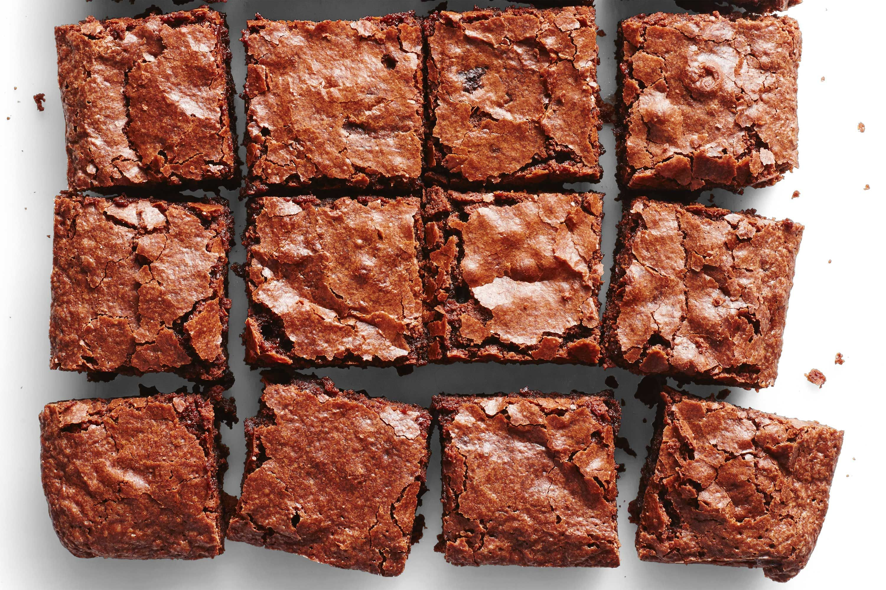

Introduction
This is my recipe for homemade Brownies. Where I come from, American food of any kind is not typical. Traditional and national dishes are preferred and only for special occasions, American food is being eaten. When I moved to Germany, I got to know western food better. I tried Brownies for the first time when I met some people from the US who were glad to make them for me. From the first bite, I liked the texture and the taste and it was addicting.
Ingredients
- Cocoa powder
- Butter
- Vanilla extract
- Salt
- Eggs
- Chocolate chips
- Flour
- Sugar
- Baking powder
How to make Brownies
- Add the butter, 3 eggs, and one teaspoon of vanilla extract to a large bowl then whisk together
- Add the sugar to the mixture
- Whisk the mixture together until it’s nice and smooth
- Sift in the flour, cocoa powder, and ½ a teaspoon of salt, and in the end, add ½ a teaspoon of baking powder to the mixture
- Stir the mixture together until everything is just incorporated
- Fold in the chocolate chips. Make sure that all ingredients are properly mixed together and also check the bottom of the bowl
- Preheat the oven to 180°C
- Transfer the batter to a lined baking dish and smooth it to the corners then bake until the top is dry, and the edges have started to pull away from the sides of the baking dish, about 20 to 30 minutes
- Wait for the Brownies to cool down completely before you cut and serve them
Enjoy!